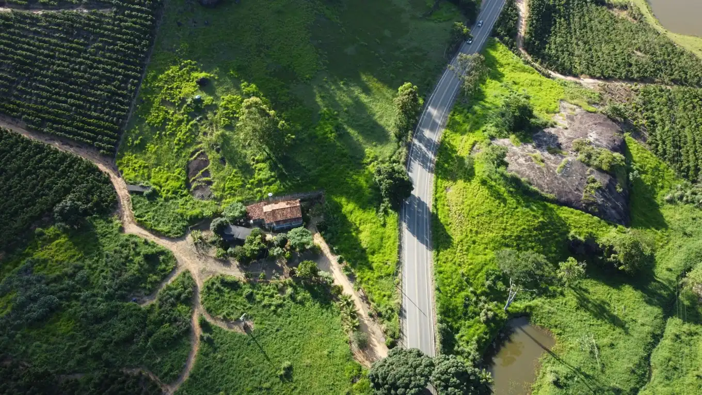

Terra NobreNegócios Rurais
Ficha técnica · TN-106Venda · Sítio
Emitida em 08/11/2026
Emitida em 08/11/2026
Sítio com nascentes, café e casa sede
Região de Batatais e Altinópolis · localização exata sob sigilo

Dados gerais
| Código | TN-106 |
|---|---|
| Negócio | Venda |
| Área total | 24,2 ha (10,0 alqueires paulistas) |
| Área produtiva | 15 ha |
| Aptidão | Lazer e moradia, Café |
| Exploração atual | Café (4 ha), pomar e pequena criação |
| Valor | R$ 2,1 milhões (R$ 89 mil por ha · R$ 215 mil por alq.) |
Uso do solo
- Lavoura (área agricultável)6,00 ha25%
- Pastagem9,00 ha37%
- Reserva legal4,84 ha20%
- APP (beira de rio e nascentes)2,10 ha9%
- Represas e lagos0,80 ha3%
- Sede, estradas e benfeitorias1,46 ha6%
Água
| 3 nascentes | Uma delas abastece a casa por gravidade |
|---|---|
| Lago | 0,8 ha, com peixes |
| Poço semiartesiano | Vazão de 4 m³/h |
Topografia e solo
| Relevo | Ondulada |
|---|---|
| Declividade | 6% a 18% |
| Altitude | 760 a 830 m |
| Solo | Latossolo vermelho-amarelo |
Energia
Rede monofásica; trifásica a 600 m
Estrutura
| Casa sede | 210 m², 3 quartos, varanda e fogão a lenha |
|---|---|
| Casa de caseiro | 70 m² |
| Galpão | 120 m² |
| Pomar e horta | Cítricos, manga, jabuticaba e horta irrigada |
Acesso
| Estrada | 3,5 km de estrada de terra até o asfalto |
|---|---|
| Cidade | 9 km do centro urbano mais próximo |
| Ribeirão Preto | 52 km |
Documentação
| Matrícula atualizada | Conferido |
|---|---|
| Georreferenciamento | Em andamento |
| CAR ativo | Conferido |
| CCIR e ITR dos últimos 5 anos | Conferido |
Produção
Lavoura de café pequena, colhida manualmente; produção para consumo e venda local (exemplo).
Material de apresentação com dados de exemplo, declarados pelo proprietário e conferidos pela equipe Terra Nobre. Áreas em hectares; 1 alqueire paulista = 2,42 ha. Não substitui a análise jurídica, ambiental e agronômica do comprador. Município, coordenadas e matrícula são enviados só após termo de confidencialidade e autorização do proprietário.